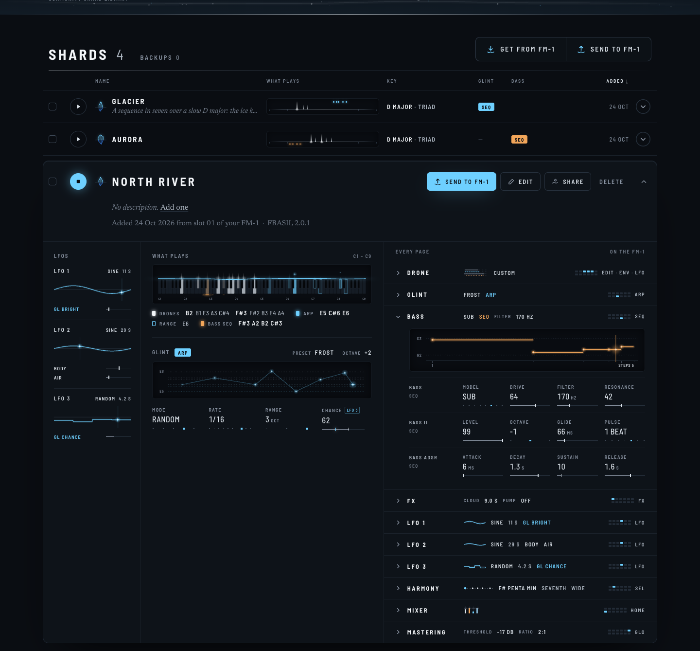

While a shard plays, its card follows the sound. Every light here was drawn from what FRASIL's engine
actually played (the River's own engine, frame by frame), not from a guess: the drones' voices, each glint, the bass,
the three LFOs, both sequences.
PLAYING: NORTH RIVER, 10 SECONDS
FILMThe keys light as the voices sound, each as bright as its envelope: the drones fog and
white, a glint ice in the sky above its key (rising a little as it fades, as on the FM-1's play page), the bass lamp
in the bed. What is latched stays drawn, dimmed. The LFO column moves at each LFO's own rate, a glint where it is now,
and under it what it moves, each in its track's colour with a gauge of its value now. GLINT on ARP shows the walk it
really takes (RANDOM, here: a step left out by CHANCE is a gap), flowing left. BASS, opened, runs its playhead.
PLAYING: GLACIER, 8 SECONDS
FILMGLINT on SEQ: its playhead goes along the constellation, the step sounding white and glowing.
No LFO is on: their column stays, quiet (OFF, NO TARGET), the shapes slate as the FM-1 draws an LFO that is off.
STILLS, 1440

01NORTH RIVER playing. The keyboard
reaches C9: GLINT's OCTAVE +2 and RANGE 3 OCT play up to E8, and every glint has its key. CHANCE, moved by LFO 3, shows
its value now as an ice tick on its gauge.02The same card at rest: what is
latched, the arpeggio's walk as its MODE would go, the LFOs' shapes without their glint.03GLACIER playing: SEQ's playhead.04AURORA playing: the bass's sequence, its
playhead and the note sounding; LFO 1 on TIMBRE.05LUMIERE NOCTURNE playing.
TABLET 1100 AND PHONE 390
06Narrower: the LFOs become a band of
three under GLINT.07A phone: the same band.
TO DECIDE
The keyboard as wide as the shard plays (C7 at least, up to C9: the keys get narrower), or always C1–C7 (the
glints above C7 not shown, as today's card already leaves RANGE's octaves above C7 out)?
The LFO column stays when no LFO is on (three quiet OFF slots, as here), or folds into one line?
Also live, if wanted: the MIXER's faders with each track's meter (as on the FM-1's MIXER page), the DRONE's strata
breathing with the tide.